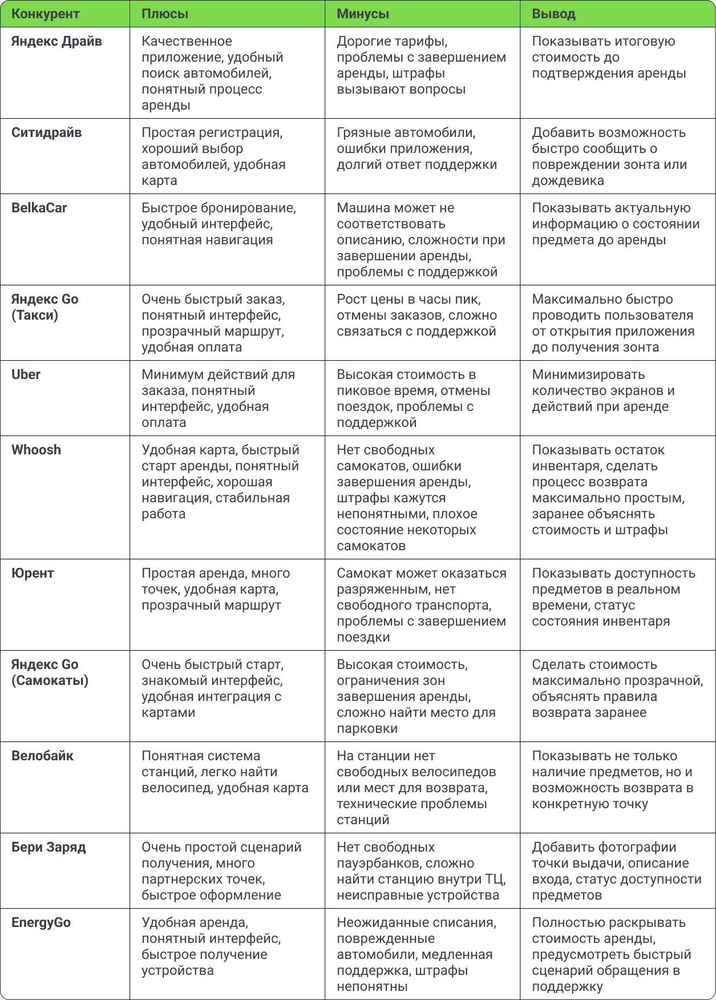
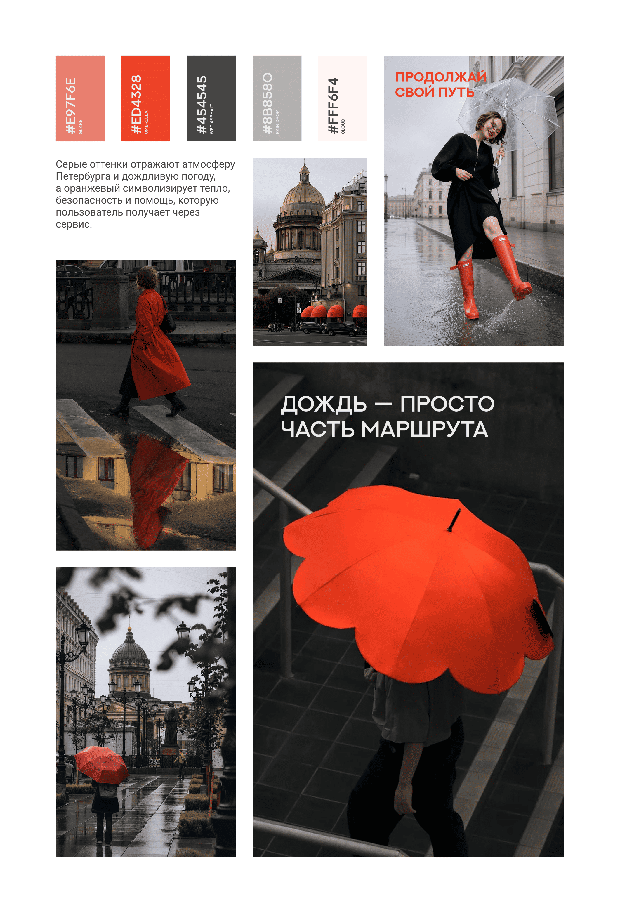
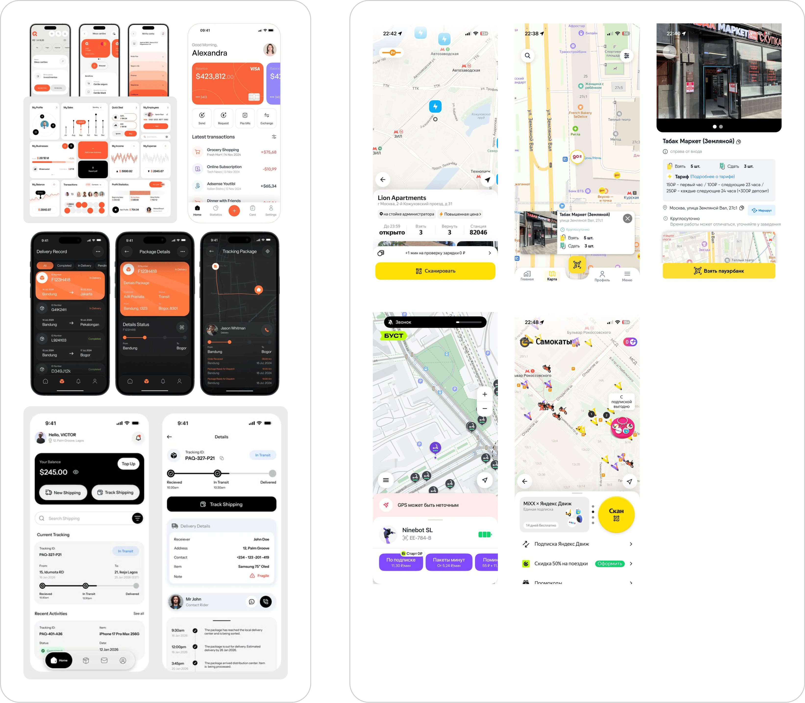
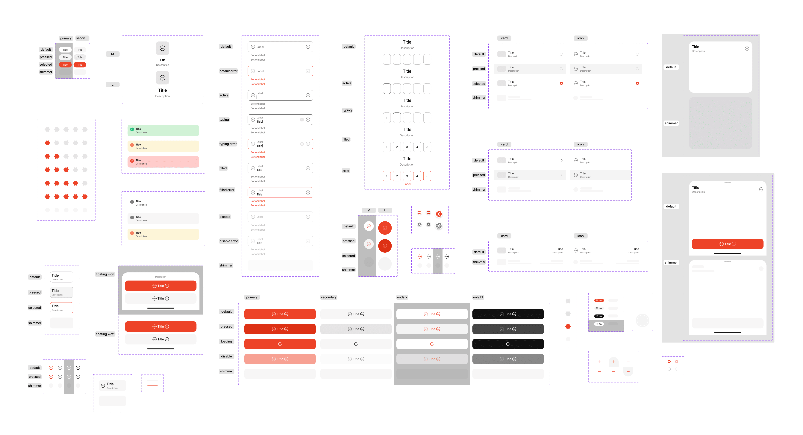

Rainguard – приложение для аренды зонтиков
Учебная задача, в рамках которой я разработала дизайн приложения от идеи до готового пользовательского сценария
Цель
Создать MVP приложения по аренде зонтиков в Санкт-Петербурге RainGuard. Удобная и стильная защита от непогоды
Параметры успеха
Активные пользователи (AU) и ежемесячные активные пользователи (MAU) — количество пользователей, которые регулярно взаимодействуют с приложением.
Удержание (retention) — количество пользователей, которые возвращаются в продукт за определённый промежуток времени.
NPS (net promoter score) или CSI (customer satisfaction index) — уровень удовлетворённости в процентах.
ROI (return on investment) – показатель чистой прибыли приложения.
ARPPU (average revenue per paying user) – средняя выручка с одного платящего пользователя.
CR (conversion rate) — количество пользователей из общего числа, которые совершили нужное действие. Конверсия в аренду
Анализ конкурентов
Необходимо собрать отзывы, для приложения, которое наиболее похожим образом закрывает потребность клиента и cуществует в виде приложения. Каршеринг самое похоже по механике, поэтому за основу беру его. Остальные конкуренты помогут выявить гипотезы, которые могут стать точками роста для приложения
Каршеринг сложен тем, что им могут пользоваться только люди с правами. Наше приожение для всех, поэтому для анализа возьму также другие приложения, в которых можно брать что-то на прокат: велосипеды, самокаты, павербанки, одежда, техника для ремонта, электроника и просто вещи

Гипотезы
1) Мы предполагаем, что прощенная регистрация и добавление способа оплаты увеличит конверсию из первого запуска приложения в аренду для новых пользователей, потому что уменьшение количества обязательных действий снизит порог входа и позволит быстрее перейти к использованию сервиса
2) Мы предполагаем, что отображение ближайшей доступной точки аренды сразу после открытия приложения сократит время до начала аренды для пользователей, попавших под дождь, потому что избавит их от необходимости самостоятельно искать подходящую точку.
3) Мы предполагаем, что отображение информации о состоянии зонта или дождевика перед арендой увеличит доверие к сервису и сократит количество обращений в поддержку для новых пользователей, потому что они будут понимать, что получают исправный и чистый предмет.
4) Мы предполагаем, что информация об итоговой стоимости аренды повысит конверсию в начало аренды среди пользователей-туристов с посуточной арендой, потому что прозрачная стоимость снизит неопределенность и повысит доверие к сервису
5) Мы предполагаем, что пошаговый сценарий возврата аренды, увеличит процент успешных завершений аренд среди неопытных пользователей, потому что инструкция будет давать полное понимание того, что нужно сделать на данном этапе и снизит страх совершить ошибку
6) Мы предполагаем, что размещение кнопки быстрого обращения в поддержку в процессе аренды и возврата сократит количество незавершенных аренд для пользователей, столкнувшихся с проблемой, потому что они смогут оперативно получить помощь и завершить сценарий.
Интервью
Я провела интервью с 5 респондентами, возраст 21-41 год. Переодически используют приложения для шеринга.
Расшифровка интервью и инсайты1) Первый запуск приложения должен занимать не больше нескольких минут до начала аренды.
2) Приложение должно помогать принять решение за несколько секунд, а не заставлять изучать карту.
3) Задача приложения — не только показать точку на карте, но и довести пользователя до неё.
4) Наличие инвентаря — одна из ключевых причин начать аренду.
5) Пользователь должен понимать, сколько заплатит, ещё до нажатия кнопки «Взять зонт».
6) Доверие к сервису формируется ещё до начала использования зонта.
7) Интерфейс должен помогать исправить ситуацию без обращения в поддержку.
8) Приложение должно вести пользователя через проблемные сценарии, а не только через идеальный путь.
JTBD
Когда я неожиданно попал под дождь, я хочу сразу увидеть ближайшую точку, где есть свободный зонт, чтобы быстро взять его и не тратить время на поиски.
Когда я выбираю зонт, я хочу заранее видеть стоимость, состояние зонта и условия аренды, чтобы быть уверенным, что не столкнусь с неожиданными расходами или неисправным предметом.
Когда я впервые пользуюсь сервисом, я хочу пройти регистрацию максимально быстро, чтобы сразу приступить к аренде без лишних действий.
Когда я возвращаю зонт, я хочу получить понятные инструкции и подтверждение успешного возврата, чтобы быть уверенным, что аренда завершилась и деньги больше не списываются.
Когда во время аренды возникает проблема,я хочу получить понятные подсказки или быстро решить ее самостоятельно, чтобы не тратить время на ожидание поддержки и продолжить пользоваться сервисом.
Референсы
Чтобы начать прорабатывать концепцию, собрала мудборд:

А также визуальные и процессуальные референсы:

UI-kit
Посмотреть полный ui-kit
Сценарии
Используя инсайты из исследований и собранный на основе референсов ui-kit, я собрала основные и вспомогательные сценарии, а именно:
- Начало аренды
- Завершение аренды
- Возврат во время проверки
- Вход в приложение по номеру телефона
- Добавление почты
- Способы оплаты
- История аренд

Тестирование
В исследовании приняли участие 6 респондентов, возраст от 23 до 31 года, все работают в сфере it. Тестирование проводилось через платформу Maze, которая дает возможность проанализировать тепловую карту
Задание: Арендуйте зонт на 5 часов
Процент прохождения сценария: 100% — все участники успешно добрались до экрана активной аренды.
Мисклики: 37% — по большей степени из-за ограничений прототипа. Также некоторые экраны были настроены на анимацию через задержку, респондентам хотелось скорее перейти на следующий этап
Выполнение задания: 0% — никто из респондентов не выбрал тариф на 5ч., хотя это было основным заданием.
Среднее время нахождения на экране после смены способа оплаты: 1,17c — все респонденты, которые решили изменить способ оплаты успешно вернулись в основной сценарий
Инсайты:
На карточках выбора тарифа нет информации о выгоде, если брать не поминутный тариф. Стоит доработать карточки с тарифами, возможно добавить бейдж, который будет показывать выгоду тарифов